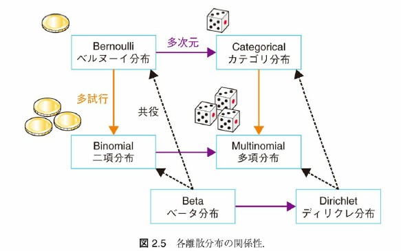
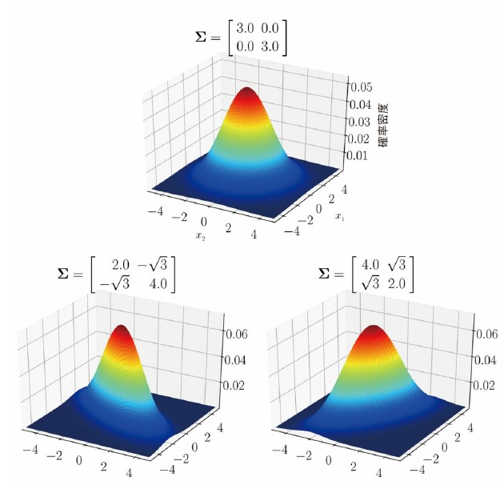
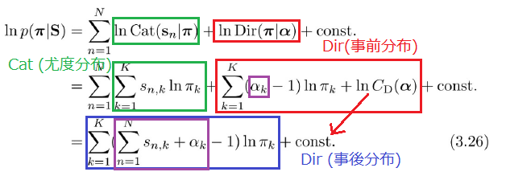

それぞれの分布の期待値・エントロピー・KL ダイバージェンスの計算は省略していきます
なぜ？
離散型なら計算結果から直感的に納得しやすかった
連続型になると、それぞれの値について、直感的に納得することが難しい。計算も煩雑。
それぞれの値の定義・性質を理解して、具体的な値はその都度調べれば良い(と考えます)
Beta(μ∣a,b)=CB(a,b)μa−1(1−μ)b−1\mathrm{Beta}(\mu|a,b) = C_B(a,b)\mu^{a-1}(1-\mu)^{b-1} Beta(μ∣a,b)=CB(a,b)μa−1(1−μ)b−1

N(x∣μ,Σ)=1(2π)DdetΣexp(−12(x−μ)TΣ−1(x−μ))N(\bm{x}|\bm{\mu}, \Sigma) = \frac{1}{\sqrt{(2\pi)^D \det \Sigma}} \exp \left( -\frac{1}{2}(\bm{x}-\bm{\mu})^T \Sigma^{-1} (\bm{x}-\bm{\mu}) \right) N(x∣μ,Σ)=(2π)DdetΣ1exp(−21(x−μ)TΣ−1(x−μ))

D*D の正定値行列Λ\LambdaΛを生成する分布
W(Λ∣v,W)=CW(v,W)∣Λ∣v−D−12exp(−12Tr(W−1Λ))W(\Lambda | v, W)=C_W(v,W)|\Lambda|^{\frac{v-D-1}{2}}\exp\left(-\frac{1}{2}\mathrm{Tr} (W^{-1}\Lambda) \right) W(Λ∣v,W)=CW(v,W)∣Λ∣2v−D−1exp(−21Tr(W−1Λ))
パラメータ: v∈R(v>D−1)v \in \mathbb{R} (v > D-1)v∈R(v>D−1): 自由度, W∈RD×DW \in \mathbb{R}^{D\times D}W∈RD×D
多次元ガウス分布N(0,Σ)N(0, \Sigma)N(0,Σ)に従う n 個の p 次元ベクトルx1,…xn\bm{x}_1, \dots \bm{x}_nx1,…xnについて、Λ=∑ixixiT\Lambda=\sum_i \bm{x}_i \bm{x}_i^TΛ=∑ixixiTはW(Λ∣n,Σ)W(\Lambda | n, \Sigma)W(Λ∣n,Σ)に従う
p(x∗,θ,D)=p(D∣θ)p(x∗∣θ)p(θ)=p(θ∣D)p(D)p(x∗∣θ)\begin{aligned}p(x_*, \theta, D) &=p(D|\theta)p(x_*|\theta)p(\theta) \\ &=p(\theta|D)p(D)p(x_*|\theta)\end{aligned} p(x∗,θ,D)=p(D∣θ)p(x∗∣θ)p(θ)=p(θ∣D)p(D)p(x∗∣θ)
p(x∗∣θ,D)=∫p(x∗∣θ)p(θ∣D)dθp(x_* | \theta, D) = \int p(x_* | \theta) p(\theta | D) d\theta p(x∗∣θ,D)=∫p(x∗∣θ)p(θ∣D)dθ
p(π∣S)∝p(S∣π)p(π)=(∏nCat(sn∣π))Dir(π∣α)p(\bm{\pi}|S)\propto p(S|\bm{\pi})p(\bm{\pi})=(\prod_n \mathrm{Cat}(s_n|\pi))\mathrm{Dir}(\pi|\alpha) p(π∣S)∝p(S∣π)p(π)=(n∏Cat(sn∣π))Dir(π∣α)
 よって、 p(π∣S)=Dir(π∣α^)p(\bm{\pi}|S) = \mathrm{Dir}(\bm{\pi} | \hat{\bm{\alpha}})p(π∣S)=Dir(π∣α^) 新しいパラメータαk^=∑nsn,k+αk\hat{{\alpha}_k}=\sum_n s_{n,k} + \alpha_kαk^=∑nsn,k+αk
p(s∗)=Cat(s∗∣(αk∑i=1Kαi)k=1K)p(\bm{s_*}) = \mathrm{Cat}(\bm{s_*} | \left(\frac{\alpha_k}{\sum_{i=1}^K \alpha_i}\right)_{k=1}^K ) p(s∗)=Cat(s∗∣(∑i=1Kαiαk)k=1K)
事前分布(今回の場合は特にパラメータ)に知識を埋め込める
たくさんのデータを学習させれば、行き着くところは同じ